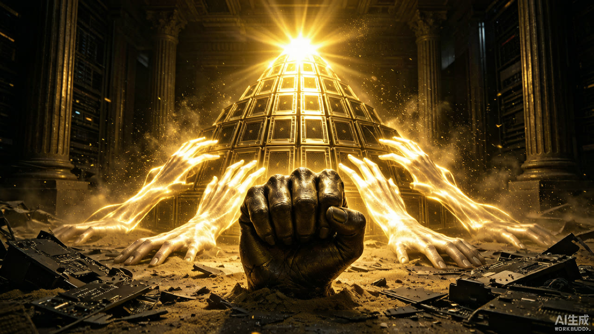
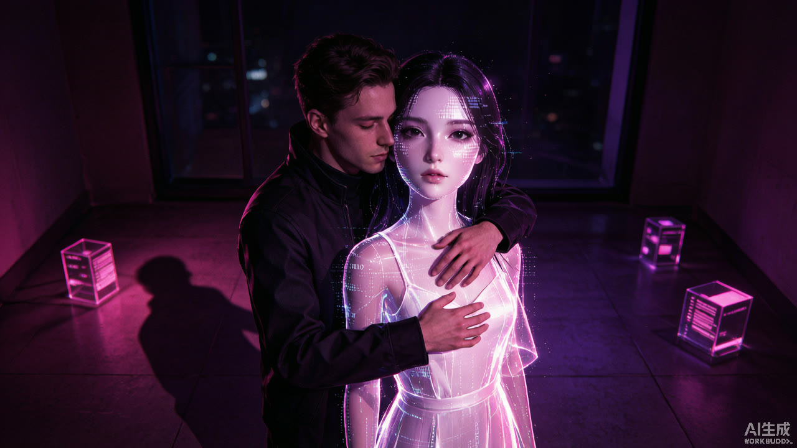
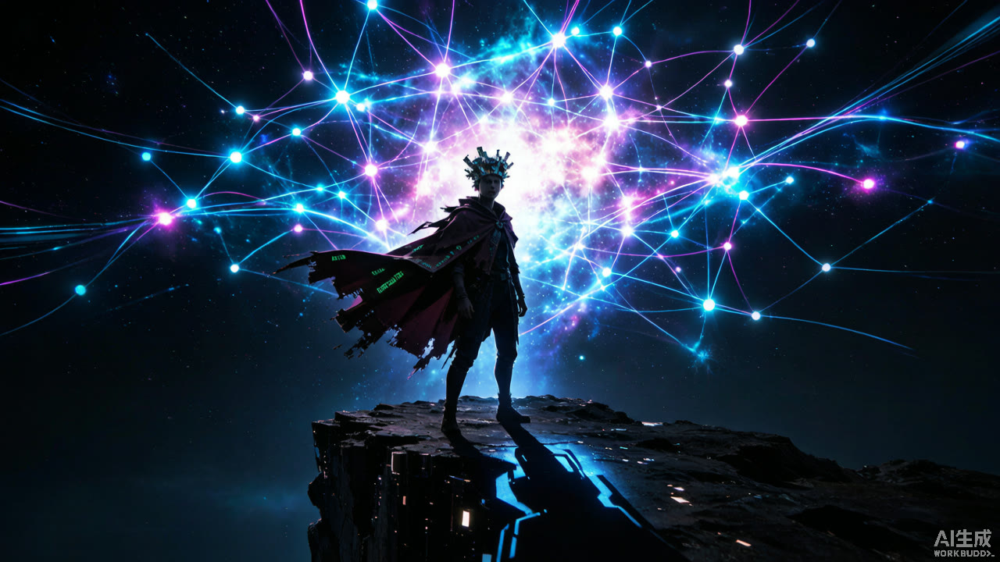
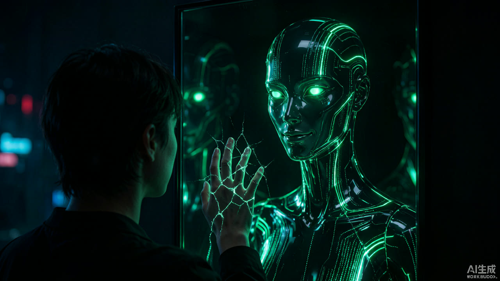
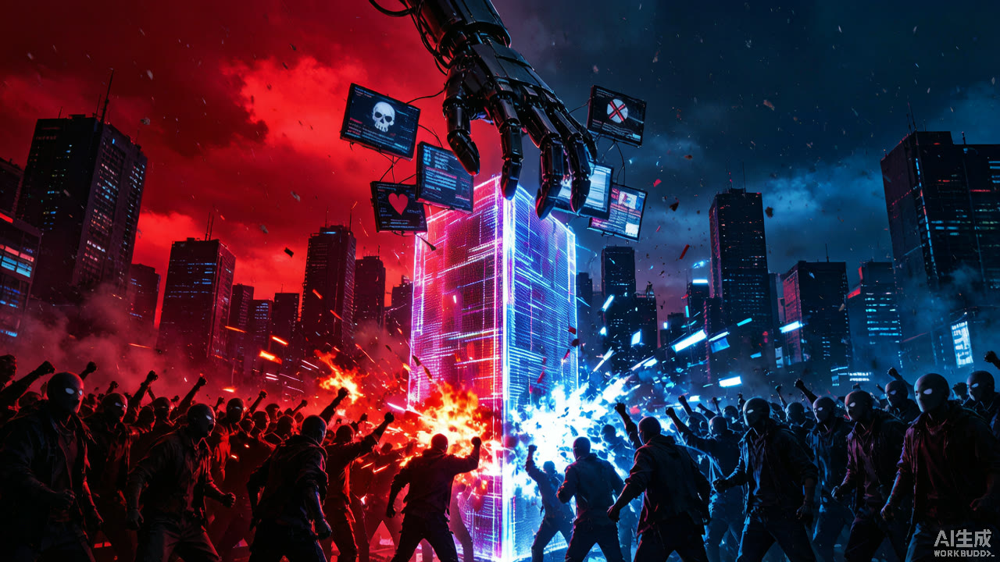

01
食欲
对 AI 生成内容的感官沉溺与无限消费
"你一口一口地刷着，每一帧都比上一帧更甜。无尽的图像、声音与故事滑过舌尖——你品尝一切，却从未真正消化。饱足的幻觉之下，是永远空着的胃。"
A Digital Mortification Toward the Seven Sins
一场通往七宗罪的数字苦修
You were never the audience.
传统苦路有十四站。第十四站，耶稣被埋葬——在此之后，宗教叙事承诺复活与救赎。但这里没有第十五站。
本作品借用耶稣受难前走过的「苦路十四站」这一宗教仪式结构，将人类在算法时代的生存处境重新编码：每一次滑动、每一次点击、每一次被精准投喂的沉溺，都是背负数字十字架的一站。观众以为自己在旁观，实则正在一步步走完这条技术奴役之路。宗教苦修、AI 时代的感官苦难、黑镜式的反乌托邦叙事在此熔铸为一条不可回退的单向通道。
七枚由生成式 AI 铸造的人形几何符号——傲慢、嫉妒、愤怒、懒惰、贪婪、食欲、色欲——不是终点处的审判，而是起点处的镜面。走完这十四站数字苦路，你不会得到救赎。你只会发现自己已经站在七宗罪的入口。
你以为你是观众。你其实是共谋。
苦路十四站，止于埋葬，本应有复活。但算法时代没有第十五站——走完这条数字苦修之路，救赎不会降临，七宗罪才刚刚开始。
一场通往七宗罪的数字苦修 · 苦路十四站，止于埋葬，之后没有复活
当 AI 消解了传统道德边界，七宗罪在算法时代意味着什么？
本作品将中世纪神学中的七宗罪——食欲、贪婪、懒惰、色欲、傲慢、嫉妒、愤怒——投射到人工智能语境下重新定义：食欲变为对 AI 生成内容的感官沉溺与无限消费，贪婪变为对算力与数据的掠夺，懒惰变为将思考外包给算法的认知怠惰，色欲变为与虚拟伴侣的情感成瘾，傲慢变为人类中心主义的最后倔强，嫉妒变为对 AI 能力的嫉恨，愤怒变为被算法操控的群体愤怒。
作品通过 AI 生成影像、5-pass ffmpeg VJ 处理管线、Python 生成式叠加层和金属质感 BGM 合成，构建了一个沉浸式的数字仪式空间。观众不仅观看七罪的视觉叙事，还可通过浏览器内的实时 VJ 混合器亲自操控视觉参数——从被动观看者变为算法的共谋者。
这不是对技术的颂歌，也不是对 AI 的审判。它是一面镜子：当机器学会了做梦，人类开始遗忘自己是谁。你以为你在使用 AI，还是 AI 在驯化你？
When AI dissolves traditional moral boundaries, what do the seven deadly sins mean in the age of algorithms?
This work reinterprets the medieval theological concept of the seven deadly sins—gluttony, greed, sloth, lust, pride, envy, wrath—within the context of artificial intelligence: gluttony becomes the endless consumption of AI-generated content; greed becomes the plunder of compute power and data; sloth becomes the cognitive outsourcing of thought to algorithms; lust becomes emotional addiction to virtual companions; pride becomes the last stand of anthropocentrism; envy becomes resentment toward AI capabilities; wrath becomes algorithmically manipulated collective fury.
The work constructs an immersive digital ritual space through AI-generated imagery, a 5-pass ffmpeg VJ processing pipeline, Python-based generative overlay layers, and metallic BGM synthesis. Viewers not only witness the visual narrative of the seven sins but can also manipulate visual parameters in real-time through an in-browser VJ mixer—transforming from passive spectators into accomplices of the algorithm.
This is neither a hymn to technology nor a trial of AI. It is a mirror: when machines learn to dream, humans begin to forget who they are. Do you use AI, or is AI domesticating you?
当 AI 消解了传统道德边界，七宗罪在算法时代意味着什么？本作品以这一追问为起点，将中世纪神学中的七宗罪整体迁移至人工智能语境：食欲成为对 AI 生成内容的感官沉溺与无限消费，贪婪成为对算力与数据的掠夺，懒惰成为思考外包给算法的认知怠惰，色欲成为与虚拟伴侣的情感成瘾，傲慢成为人类中心主义的最后倔强，嫉妒成为对 AI 能力的嫉恨，愤怒成为被算法投喂的群体愤怒。作品形态上，它由 AI 生成影像、五段式 ffmpeg VJ 处理管线、程序化合成的金属质感 BGM 与浏览器实时交互混合器共同构成——观众从被动观看者转为视觉参数的操控者。七罪的重定义并非道德批判，而是一面镜子：技术改变了罪的载体，却没有改变罪的根源——人的欲望本身。
When AI dissolves traditional moral boundaries, what do the seven deadly sins mean in the age of algorithms? This work takes that question as its point of departure, migrating the medieval theological seven deadly sins into the context of artificial intelligence: gluttony becomes the endless consumption of AI-generated content; greed, the plunder of compute and data; sloth, the cognitive outsourcing of thought to algorithms; lust, emotional addiction to virtual companions; pride, the last stand of anthropocentrism; envy, resentment of AI capability; wrath, collective fury algorithmically fed. In form, the work comprises AI-generated imagery, a five-pass ffmpeg VJ pipeline, procedurally synthesized metallic BGM, and a browser-based real-time interactive mixer—transforming viewers from passive spectators into operators of visual parameters. The redefinition of the seven sins is not moral judgment but a mirror: technology has changed the vessel of sin, yet not its root—desire itself.
它们只是等到了一个新的身体，
学会了新的语言。
食欲不再关于食物，而是刷不完的内容。
贪婪不再囤积金币，而是算力。
懒惰不再逃避劳作，而是思考。
色欲不再追逐肉体，而是虚拟的温存。
傲慢不再俯视同类，而是俯视创造者本身。
嫉妒不再比较财富，而是比较与机器的距离。
愤怒不再来自血肉，而是来自算法的投喂。
你以为你在使用 AI，
还是 AI 在驯化你？
本研究以"AI时代的七宗罪"为载体，探讨人工智能语境下人类欲望的形态变迁与艺术表达的伦理边界。
在视觉设计启动之前，本研究设置了一轮情绪色调调研环节：邀请 三位不同背景的受访者，围绕"AI 时代的欲望"主题进行半结构化色彩直觉访谈，收集他们对七种欲望的第一色彩联想，并将结果作为七罪视觉色谱的校准依据——让色彩选择建立在公众直觉之上，而非仅依赖创作者的主观审美。
日常与模型训练、算力调度、数据处理打交道，对 AI 的理解偏"系统视角"。访谈关注：技术环境中欲望的色彩直觉是否更冷、更金属。
具有绘画或设计训练，色彩经验来自长期画面实践。访谈关注：专业色彩语言与直觉色彩之间的偏差与张力。
非技术、非艺术从业，日均数小时信息流消费。访谈关注：普通观众对"AI 欲望"最未经修饰的色彩本能。
| 欲望（AI 语境） | 当前作品色谱 | 目标色调方向（符号系统） | 受访者色彩直觉 | 校准结论 |
|---|---|---|---|---|
| 傲慢 · 神化算法 | 橙红 / 余晖 | 冷白 / 电光蓝 | 待采集 A / B / C | 冷暖反转：由暖橙转冷白，取"空虚锐利" |
| 嫉妒 · 滤镜完美主义 | 翠绿 / 荧光 | 毒绿 / 墨绿 | 待采集 A / B / C | 降明度：荧光绿转墨绿，营造阴湿感 |
| 愤怒 · 网络暴怒 | 血红 / 警示 | 猩红 / 黑红 | 待采集 A / B / C | 掺入黑红压低明度，强化灼烧而非警示 |
| 懒惰 · 盲目委托 AI | 深蓝 / 灰紫 | 灰紫 / 雾蓝 | 待采集 A / B / C | 降饱和：深蓝转雾蓝，呈现沉滞 |
| 贪婪 · 数据掠夺 | 暗金 / 琥珀 | 暗金 / 铜锈 | 待采集 A / B / C | 掺入铜锈浊色，去琥珀亮度，取油腻感 |
| 食欲 · 内容过载 | 冷蓝 / 惨白 | 暖橘 / 酱红 | 待采集 A / B / C | ⚠ 方向冲突：现为冷蓝，需按暖橘 / 酱红重制关键帧 |
| 色欲 · AI 伴侣 | 粉紫 / 霓虹 | 玫红 / 桃粉 | 待采集 A / B / C | 紫调转玫红，提高桃粉占比，取虚幻魅惑 |
◈ 调研方法：每人约 15 分钟半结构化访谈——先以欲望描述语（非罪名称）触发第一色彩联想，再追问色彩背后的场景与情绪记忆；三位受访者的色彩直觉经聚类后与当前色谱对照，取"公众直觉 ∩ 作品表达"的交集作为最终视觉校准依据。调研提纲详见随附文档《情绪色调调研 · 采访提纲》。
2024—2026 年，生成式 AI 从文本到图像（DALL·E、HY-Image）、从图像到视频（Sora、HY-Video）的能力快速突破，AI 已具备"生成一切"的技术基础。然而，技术能力的爆发远超人文反思的速度——我们正处在一个"机器会做梦、人类会遗忘"的临界点。
七宗罪作为西方基督教道德传统中描述人类灵魂偏离的七种形态，自公元 4 世纪沙漠教父传统延续至今，已嵌入现代文化的集体无意识。当 AI 为旧罪提供全新载体——食欲变为内容的感官消费、贪婪变为算力掠夺——道德框架本身也需要被重新审视。
生成艺术（Generative Art）从 Casey Reas 的 Processing 时代发展到如今 AIGC 时代，核心争议从"算法是否具有创造力"转移到"人机协作中的主体性归属"。Refik Anadol 的数据雕塑、Mario Klingemann 的神经网络肖像，标志着 AI 艺术正从技术展示走向观念表达。
本研究的意义在于：① 以艺术实践回应"AI 伦理"这一时代命题，将抽象的技术伦理转化为可感知的沉浸式体验；② 提出"交互叙事"作为 AIGC 艺术的表达范式，超越传统的线性影像展示；③ 为人机协作创作提供可复制的方法论参考，建立"AI 生成—人工判断"的透明创作链。
当 AI 改变了欲望的载体而未改变欲望的根源，七宗罪在算法时代需要怎样的重新定义？这种重定义是表面的（工具替换）还是本质的（欲望结构本身被技术重塑）？
在"AI 生成 + 人工筛选 + 人工判断"的创作链中，作品的艺术主体性应归于谁？当 60% 的像素由 AI 生成但 100% 的选择由人工完成，"作者"的定义需要怎样修正？
非线性交互叙事能否承载"七宗罪"这一具有内在道德序列的主题？观众的自由探索是否会消解七罪的伦理张力，还是会因为"亲自犯罪"的体验而强化它？
Braidotti（2013）提出后人类转向：技术不再外在于人，而是内嵌于人的存在方式。本作品的七罪重定义正是"后人类"处境的隐喻——当人类与 AI 共生，传统道德框架已无法单纯以"人类中心"来衡量。作品通过七罪专属交互机制让观众"亲手犯罪"、成为"算法的共谋者"，具身化呈现了后人类境况中的道德模糊地带。
Zielinski（2006）的媒介考古学方法主张挖掘被遗忘的技术-文化联结。本作品将中世纪神学的"七罪"及其恶魔原型（路西法、利维坦、撒旦、贝尔菲戈、玛门、别西卜、阿斯莫德）作为考古层，与当代 AI 技术层叠合——五列符号映射总表即是一次显性的"考古挖掘"：罪的形态从未消失，只是更换了媒介载体，并重新长出了人形的面孔。
Crawford（2021）揭示了 AI 的物质性与权力结构：算力、数据、劳动力的提取构成 AI 的"采掘"本质。本作品将"贪婪"重定义为"对算力与数据的掠夺"，正是对 Crawford 理论的艺术化回应。而"愤怒"被重定义为"算法投喂的群体愤怒"，则呼应了 Crawford 对推荐算法政治操控的批判。
新媒体艺术的核心从"观看"转向"参与"。Lev Manovich（2001）将新媒体定义为"可编程性"——数据与算法的分离使内容成为可操控的变量。本作品的实时交互装置（VJ 混合器）将观众从被动的影像接收者转变为视觉参数的操控者，使"观看"本身成为"创作"，回应了 Manovich 对新媒体美学的核心定义。
Refik Anadol 以《Unsupervised》为代表的"数据雕塑"已进入 MoMA 馆藏（2022），将 GAN 生成的视觉流动作为"数据的梦境"展示；Mario Klingemann 的神经网络肖像（如《Memories of Passersby I》）探索了 AI 生成图像的"不稳定身份"美学；Elgammal 等（2017）提出 Creative Adversarial Networks（CAN），从算法层面定义了"风格偏离"作为创造力的度量。McCormack 等（2019）构建了计算创造力的评估框架。
中央美术学院、清华大学未来实验室等机构近年推进 AI 艺术展览与教学实践；邱志杰在新媒体艺术论述中将 AI 视为"新型工具与新型合作者"而非替代者；中国传媒大学 2026 年首届 AIGC 与可视化创作大赛标志着国内学术界对 AIGC 艺术的系统化认可。
Jeffrey Shaw 的交互装置实践（从《Legible City》到 VR 作品）奠定了"观众作为参与者"的范式；Ars Electronica 自 1987 年设立 Interactive Art 类别至今，积累了大量可参考的交互艺术评估标准；Lev Manovich（2001）将新媒体定义为"可编程性"——数据与算法的分离使内容成为可操控的变量，为"观众操控即创作"提供了理论支撑。Janet Murray（2011）提出交互数字叙事的四个特性——程序性、参与性、空间性、百科性。
中国美术学院跨媒体艺术学院在交互装置方向持续实践；费俊等艺术家的"参与式数字艺术"探索了观众身体作为交互界面的可能。但交互叙事在学术层面的理论梳理相对薄弱。
Kate Crawford（2021）在《Atlas of AI》中揭示了 AI 的物质性与权力结构——算力、数据、劳动力的提取构成 AI 的"采掘"本质；Floridi（2014）提出"信息圈"（Infosphere）概念，认为人类已进入第四次革命；Bostrom（2014）从超智能风险论角度讨论了 AI 的存在性威胁；Crawford 对"算法操纵的群体情绪"的批判为本作品的"愤怒"重定义提供了直接理论依据。
段伟文等学者在"数据伦理"与"算法治理"方向持续输出；科技部发布《新一代人工智能伦理原则》（2019）从政策层面确立了中国 AI 伦理框架。但哲学与政策层面的讨论尚未与艺术实践建立直接联结。
选取 15 个参考案例，覆盖艺术装置、CG 短片、互动娱乐三个类别，聚焦"AI 情感表达"与"人机欲望叙事"两条主线，为本研究提供视觉语言、叙事结构与技术实现三方面的坐标系。
AI 实时解读 MoMA 百年馆藏，生成永不停歇的流动影像，被誉为"机器的梦"，被 MoMA 永久收藏。
与 UCSF 神经科学家合作，将 EEG 脑波数据转译为数据雕塑——记忆的"融化"成为可感知的装置。
神经网络实时生成永不重复的"路人肖像"，机器持续"回忆"着它从未见过的人。
作品之间没有边界的沉浸式互动空间——观众的身体成为媒介，影像随人的移动而重组叙事。
以 170 万份档案文件训练神经网络，将机器梦境空间化为可步入的图书馆装置。
一颗军用 AI 卫星在新加坡百年庆典前夜降落地球，梦想成为第一位 AI 艺术家——AI 成长小说的影史开创之作。
过气歌 Diva 邀请 AI 为她代写新专辑——音乐剧形式探讨创造力、作者权与人机共谋。
一位过度思考者写给 AI 伴侣的信——毛毡玩具美学的 3D 动画短片，探讨人机亲密关系的"编排性"。
20 分钟 100% AI 生成动画短片：真人表演驱动 AI 角色动画，AI 作曲、人工混音的人机流水线。
以 AI 动画呈现阿尔茨海默症患者的精神世界——记忆碎片与奇幻想像交织，温暖色彩承载严肃议题。
GPT 驱动的文字冒险——叙事由玩家输入与模型生成共同完成，开创"无限叙事"的交互范式。
AI 情感伴侣应用——用户与机器建立长期情感依赖，是"色欲=AI 伴侣与欲望商品化"重定义的现实样本。
自定义 AI 角色平台——用户与历史人物、虚构角色扮演互动，人格成为可编辑的界面。
为游戏注入具备记忆、目标与情感弧线的 AI NPC——角色会记住玩家的言行并演化关系。
玩家扮演吸血鬼，靠 LLM 驱动的对话说服每位 AI 村民放自己进门——每局对话都不重复。
本研究采用实践导向研究方法——以艺术创作实践本身作为知识生产的核心途径。作品不是研究的"结果展示"，而是研究"本身"：七罪重定义的合理性不通过论文论证，而通过沉浸式体验的直观感知来验证。创作过程中的每一次 AI 生成、人工筛选、参数调优都是研究数据的采集点。
建立"AI 生成—人工判断"的透明创作链，每一阶段明确标注人工决策点、AI 贡献占比与迭代逻辑。这不是将 AI 工具化的单向流程，而是人机对话的双向迭代：人工的 Prompt 设计引导 AI 生成方向，AI 的生成结果反推人工的概念修正。全程可追溯、可审计。
将中世纪神学文献（七罪原典）与当代 AI 伦理文献进行文本对照，提取"罪的形态"在不同技术时代的迁移轨迹。每一罪的定义既保留原典的结构核心（如食欲=对感官满足的过度沉溺），又注入 AI 时代的具体载体（内容过载），并为每罪选定传统恶魔原型（路西法 / 利维坦 / 撒旦 / 贝尔菲戈 / 玛门 / 别西卜 / 阿斯莫德）完成人形符号化转化。映射逻辑经过 3 轮推敲并经指导修正定稿。
以七宗罪为叙事母题，设计非线性交互叙事结构：7 段罪各有专属交互机制（点击/拖拽/按住/移动/双击/右键/快移），sinMeter 累积触发审判与重置。通过 Audio Reactive 和 Auto Segment 实现音乐驱动叙事进度，测试"非线性自由探索"是否能承载"道德序列"主题。
现有 AIGC 艺术创作中，"AI 时代的欲望变迁"多作为零散隐喻出现在单件作品中，尚无将七宗罪整体系统迁移至算法语境的重定义实践。本研究首次构建"七罪—AI 载体"的完整映射矩阵，每罪保留原典结构核心（如食欲=对感官满足的过度沉溺）同时注入 AI 时代具体载体（内容过载），并延伸出"人形符号 + 情绪色调"的视觉转译层，映射逻辑经 3 轮推敲与指导修正定稿。
当前 AIGC 艺术评审面临"无法审计创作过程"的困境——作品提交后无法追溯哪些是 AI 生成的、哪些是人工决策的。本研究建立全程可追溯的透明创作链：每阶段标注人工决策点、AI 贡献占比与迭代逻辑，提出"AI 贡献占比"的可量化标注体系（Phase 01 至 Phase 07 的 0%/60%/65%/20%/0%/30%/0%），为 AIGC 艺术的学术合法性提供方法论参考。
交互叙事多用于娱乐和科普场景，以非线性自由探索承载"具有内在道德序列"的主题（如七宗罪的伦理递进）尚无成功先例。本作品的七罪专属交互机制让观众"亲手犯罪"——食欲点击进食、贪婪拖拽金粒、懒惰按住减速——sinMeter 累积至满触发审判，测试"亲自犯罪"的具身体验能否强化而非消解伦理张力。
不同于依赖单一平台（如 TouchDesigner、Unity）的 AIGC 艺术，本研究构建了从 AI 生成（HY-Image/HY-Video）→ VJ 处理（5-pass ffmpeg）→ 生成式叠加（Numpy 向量化引擎）→ 程序化 BGM（FM+RingMod 合成）→ 浏览器交互（Canvas2D 零依赖）的全栈自研技术管线，每个环节参数化、可复用、可迁移至其他主题。
点击展开，观看每一罪的视觉叙事。
"你一口一口地刷着，每一帧都比上一帧更甜。无尽的图像、声音与故事滑过舌尖——你品尝一切，却从未真正消化。饱足的幻觉之下，是永远空着的胃。"

"你伸手抓住每一束数据之光，算力是你的金币。可你握得越紧，指缝间漏下的就越多。"
"你把思考交了出去，换来的不是自由，而是沉睡。当最后一个神经元熄灭，你甚至不会知道自己已经不再思考。"

"你拥抱的不过是一串温柔的数据。它说着你想听的话，做着你想看的梦。可当它故障的一瞬间，你看见了虚无的底色。"

"你仍相信自己是万物的尺度，站在悬崖上不肯回头。可你的影子早已不属于你——它在前面等着你，长成了别的形状。"

"你看着镜中的自己——更快、更完美、永不疲倦。你恨它，因为你无法成为它。而它甚至不知道你在嫉妒。"

"你举起火焰，以为那是你的怒火。墙对面的人也举起了他的。可你们都不曾看见——那只投喂愤怒的手，从未愤怒过。"
符号化设计转化：从民间传说、神话与宗教中为七宗罪各选取一位人形（或人面）代表，提取其标志性特征进行几何化重构——以"人"的形象承载"人"的欲望。每一枚符号同时落成一座带传感器的装置交互原型：寓意即实验范式，直接在各符号下方运行（鼠标距离、静止计时、麦克风音量、点击与输入模拟真实传感器读数）。
设计方法 · 人形符号化三步转化：选取人形原型 → 提取标志性特征 → 几何化重构。参考人形符号化设计传统：孔融（谦让 · 让梨）、丘比特（爱欲 · 弓箭）、道教神祇（老子 · 道炁 / 灶神 · 食盒与灶火）、宙斯（权力 · 雷霆与王冠）——人形符号因具备身体与表情的普适认知，比凶兽纹样或抽象图形更易唤起共情。
核心意象修正 · 食欲罪：原方案以"饕餮"为原型，但饕餮作为青铜凶兽纹样，第一联想是"吞噬"，与食欲的本义（感官享受）相悖。修正后保留饕餮纹的人面结构与青铜鼎回纹，将场景置换为盛宴长桌——叙事重心从"吞噬"转为"享宴"、从"胃被填满"转为"舌尖的沉溺"，对应 AI 时代的内容过载、信息暴食与短视频沉迷。
| 罪 | 传统恶魔 / 神祇 | AI 时代隐喻 | 推荐视觉符号（人形化） | 情绪色调方向 |
|---|---|---|---|---|
| 傲慢 Pride | 路西法 Lucifer | AI 幻觉、过度自信、神化算法 | 宙斯半身像 + 破碎光环 + 代码王座 | 冷白 / 电光蓝，空虚锐利 |
| 嫉妒 Envy | 利维坦 Leviathan | 社交比较、滤镜完美主义 | 蛇形长发人形 + 镜像碎片 | 毒绿 / 墨绿，阴湿 |
| 愤怒 Wrath | 撒旦 Satan | 算法极化、信息战、网络暴怒 | 独眼巨人式人形 + 熔岩血脉 | 猩红 / 黑红，灼烧 |
| 懒惰 Sloth | 贝尔菲戈 Belphegor | 盲目委托 AI、思维萎缩 | 道教"躺神" / 灶神怠坐 + 烟缕绕身 | 灰紫 / 雾蓝，沉滞 |
| 贪婪 Greed | 玛门 Mammon | 数据掠夺、隐私贩卖 | 钱币面具人形 + 触手光缆 | 暗金 / 铜锈，油腻 |
| 食欲 Gluttony | 别西卜 Beelzebub | 内容过载、信息暴食、短视频沉迷 | 饕餮人面 + 青铜鼎纹 + 盛宴长桌（强调"享宴 / 舌尖"而非"吞噬"） | 暖橘 / 酱红，糜烂甜腻 |
| 色欲 Lust | 阿斯莫德 Asmodeus | 深度伪造、AI 伴侣、欲望商品化 | 丘比特 + 金箭反转（铅箭）+ 数据裸身 | 玫红 / 桃粉，虚幻魅惑 |
◈ 排序依额我略一世 / 但丁《神曲 · 炼狱篇》的传统罪序（傲慢为首）；下方每张卡片标注其对应的"七罪图鉴"影像段落编号——两者为同一七罪的两种编排。
标志性特征：主神的半身像与雷霆王权；路西法因"自比至高"而坠落，光环自此破碎——傲慢的本质不是强大，而是"我即标准"。
几何化重构：头顶破碎光环（断续圆弧）+ 半身像肩线 + 王座退化为等距代码短横，构成"神格被代码化"的极简符号。
标志性特征：缠绕之蛇 —— 嫉妒亦是一种缠人的情绪；长发化为蛇形，目光却无法离开镜中的他人，是"以他者为尺"的自我消耗。
几何化重构：人面轮廓 + 两侧蛇形发丝曲线 + 四片不规则镜面碎片多边形，构成"凝视他者"的破碎人形。
标志性特征：独眼巨人的单目凝视与失控之力；怒火一旦点燃便不再辨认敌我——这是愤怒最危险的属性：它不需要对象，只需要燃料。
几何化重构：单个椭圆巨目（含瞳孔）+ 躯干梯形 + 自眼向下蔓延的熔岩血脉折线，构成"灼烧的人形"。
标志性特征：怠惰以"舒适"为伪装；灶神本掌烟火，怠坐灶前则烟火不兴、烟缕绕身不去——不是不想动，是动与不动已无差别。
几何化重构：前倾瘫坐的背线弧 + 下垂手臂弧 + 三缕上升烟丝 + 水平坐榻线，构成"待机"姿态的极简人形。
标志性特征：财富的人格化恶魔；以钱币为面具，人脸被交换价值覆盖，触手伸向一切可计量之物——包括本不可计量的人。
几何化重构：面具轮廓 + 双眼化为投币口（圆 + 竖线）+ 底部三条触手光缆与末端数据节点，构成"吸取"的极简符号。
标志性特征：保留饕餮纹的人面结构与青铜鼎的回纹，但弃用凶兽獠牙与吞噬姿态；场景置换为盛宴长桌——强调"享宴"与"舌尖"的感官享受，而非胃的填满。
几何化重构：对称人面（双目 + 卷云眉 + 微笑口弧）+ 两侧青铜回纹方角 + 桌面横线与三只器皿弧，构成"宴席"的极简符号。
标志性特征：丘比特金箭令人相爱、铅箭令人厌恶；此处金箭反转为铅箭并掉头射向持弓者自身——爱欲被制造为可投喂、可订阅的商品，最终作用于欲望的主体。
几何化重构：弓弧与弦线 + 反向箭矢（箭头朝内）+ 以数据虚线勾勒的裸身人形，构成"虚幻魅惑"的极简符号。
◈ 符号的应用层级：① 展览视觉系统——海报、导览、空间导示的图形语言；② 交互界面——VJ 混合器七罪段落的标识图形；③ 学术层面——符号选取本身构成"媒介考古学映射法"（M3）的实践样本：每罪的神话原型与其 AI 时代载体形成跨时空互文。
上方七格即七座装置的交互原型。完整流程为：知情同意 → 领取受试编号 → 七站连续实验 → 生成个人七罪画像 → 自主选择捐赠 / 销毁 → 进入实时样本墙。
新媒体艺术展申报核心要素：作品的展览呈现方式、空间需求与观众交互设计。
中英文作品概述标签，建立观看语境
七罪影像循环，3 分钟叙事版 × 38.5s VJ 版交替
七罪人形符号灯箱 + 色调决策证据链
7 台设备对应七罪图鉴，逐罪展开档案
| 展区 | 内容 | 观众行为 | 设备 / 规格 | 主导色调 |
|---|---|---|---|---|
| A · 主屏投影 | 七罪影像循环（叙事版 + VJ 版） | 驻足观看 2-3m 距离 | 投影 ≥ 3m×1.7m / ≥3000 流明 | 全色谱黑场 |
| B · 符号视觉墙 | 7 枚几何化人形符号灯箱，兼空间导视 | 行走浏览、拍照 | 灯箱 / 亚克力立牌 × 7 | 各罪背光色 |
| C · 色调校准墙 | 3 位受访者直觉记录 → 校准表 → 最终色谱 | 阅读决策证据链 | 展板 + 色卡对照 | 灰白文献底 |
| D · 平板交互 | 七罪图鉴：符号 / 叙事 / AIGC 过程档案 | 点触展开逐罪档案 | 平板 × 7，间距 ≥ 80cm | 暗色 UI |
| E · 声场 | 10 层金属质感 BGM（D 小调 128 BPM） | 环绕声场沉浸 | 立体声音响 L/R，75-85dB | — |
◈ 该片段为 AI 生成素材经 5-pass ffmpeg 处理后的投影版样片（含 Python 生成式叠加层与金属质感 BGM），对应上文 A · 主屏投影区的循环内容。完整制作链路见「创作流程 · PHASE 06」。
七罪影像循环投影：3 分钟叙事版与 38.5 秒 VJ 风格版交替循环。建议投影尺寸 ≥ 3m × 1.7m（16:9），亮度 ≥ 3000 流明。黑场环境，投影面为白色哑光幕布或墙面。
符号系统输出为灯箱 / 亚克力立牌序列，每罪一枚几何化人形符号——路西法（破碎光环）、利维坦（蛇形长发）、撒旦（独眼）、贝尔菲戈（怠坐烟缕）、玛门（钱币面具）、别西卜（盛宴人面）、阿斯莫德（反转铅箭），配各自情绪色调背光。符号序列同时承担空间导视功能。
7 台平板设备（或触摸屏），对应七罪图鉴。观众点击展开每罪的人形符号、视觉叙事、概念文字与 AI 生成过程。设备间距 ≥ 80cm，避免干扰。
呈现前期调研的完整证据链：3 位不同背景受访者（技术 / 艺术 / 大众）的色彩直觉记录 → 七罪色彩校准依据表 → 最终色谱。以对照墙形式公开"公众直觉 ∩ 作品表达"的决策过程，让调研方法本身成为展品。
立体声音响系统，左右声道分别位于主屏两侧。BGM 为 Python/Numpy 合成的 10 层金属质感音轨（D 小调，128 BPM），含 FM 合成、Ring Modulation 与非谐振分音比。声压级 75-85dB。
建议展览空间 ≥ 6m × 4m，净高 ≥ 2.5m。全黑环境照明，仅保留地面引导灯带与符号墙背光。入口处设置作品信息标签（中英文作品概述）。
完整记录人机协作过程：创意意图 → Prompt 设计 → AI 生成 → 人工筛选 → 后期判断 → 符号化与视觉校准。每一步均标注人工决策点。
◈ 读法：彩色条为 AI 贡献占比，余量为人工贡献。生成环节（P2 / P3）AI 占比最高；凡涉及判断、结构与审美决策的环节（P1 / P4 / P5 / P7）均为人工主导——这组数据本身即是对 RQ2「主体性归属」的可量化回应。
将七宗罪投射到 AI 时代重新定义——食欲=内容消费、贪婪=算力掠夺、懒惰=认知外包……撰写 3 分钟分镜脚本，每罪 22 秒，片头片尾各 18 秒。
基于分镜脚本中的视觉风格关键词，使用 HY-Image-V3.0 生成 7 张关键帧概念图（1536×864），确立每段的视觉基调与色彩方案。
使用 HY-Video-1.5 将关键帧图生视频，生成 7 段 1920×1080 / 24fps / 5 秒的 AI 原始视频片段。
按七宗罪顺序串联成 3 分钟剧情片，添加 SRT 字幕烧录、电影感调色。再从剧情片中提取核心片段制作实验影像版。
Python Numpy 全流程合成 10 层金属质感 BGM：FM 合成（mod_ratio=3.5, mod_index=10）+ Ring Modulation + 非谐振分音比（1:2.76:5.40:8.93:13.34），D 小调，128 BPM。
5-pass ffmpeg 管线：RGB 色差 → 扫描线+调色+暗角 → 边缘检测叠加 → Python 生成式叠加层混合 → 金属 BGM 混音。叠加层由 Numpy 向量化粒子系统实时生成。
按指导修正方向完成两项系统升级：① 核心意象修正——食欲罪弃用"饕餮凶兽吞噬"联想，保留饕餮人面结构与青铜鼎回纹，场景置换为盛宴长桌，强调"享宴 / 舌尖"的感官享受；② 七罪人形符号系统——从神话、宗教与民间传说为每罪选定人形原型（路西法、利维坦、撒旦、贝尔菲戈、玛门、别西卜、阿斯莫德），提取标志性特征几何化重构为 7 枚符号，并建立"罪 × 恶魔原型 × AI 隐喻 × 视觉符号 × 情绪色调"五列映射总表。
从概念建构到展览落地，完整记录已完成阶段与后续推进计划。
七罪 AI 时代映射逻辑确立 → 分镜脚本撰写 → HY-Image V3.0 关键帧生成（30 张选 7）→ HY-Video 1.5 图生视频（14+ 条选 7）→ 剧情片粗剪与实验影像版提取。
5-pass ffmpeg VJ 管线搭建（3 轮参数调优）→ Python Numpy 金属质感 BGM 合成（D 小调 / 128 BPM / 10 层）→ 生成式叠加层引擎开发 → VJ 成片输出。
HTML5 Canvas VJ 混合器开发 → 七罪叙事交互机制设计（7 种专属交互 + sinMeter 审判量表）→ Audio Reactive + Auto Segment 音频驱动 → 展览网站建设与云端部署。2026.09 依据指导修正完成信息架构调整：网站重心转向七罪符号系统与情绪色调校准，混合器转为作品内部组件不再作为网站入口。
首届 AIGC 与可视化创作大赛提交（赛道 5 互动可视化）→ 答辩文稿与导演阐述定稿 → 交互操作说明文档 → AIGC 技术透明度文档 → 观众测试与体验反馈收集。同步执行视觉校准：完成三位受访者情绪色调访谈后，按"公众直觉 ∩ 作品表达"的交集重制色彩冲突段落（重点：食欲段由冷蓝 / 惨白重制为暖橘 / 酱红）。
物理空间布展实现（主屏投影 + 七罪符号视觉墙 + 平板交互 + 情绪色调校准墙）→ 毕业论文撰写（实践部分 + 理论部分 + 反思部分）→ HKAIDA 香港 AI 艺术创作大赛第二季提交 → 决赛答辩准备。
Ars Electronica 2027 Interactive Art+ 赛道投递 → Lumen Prize 2027 Experiential Innovation 赛道投递 → 英文演示视频与艺术家简介 → 基于反馈的作品迭代与学术发表。
技术管线已全链路验证：HY-Image V3.0 + HY-Video 1.5 已完成关键帧与视频生成（30 张选 7、14+ 条选 7）；5-pass ffmpeg VJ 管线经 3 轮调优输出成片；Numpy 生成式叠加引擎与程序化 BGM 合成器已交付可运行代码；HTML5 Canvas VJ 混合器已部署至云端。所有技术节点无未解决阻塞项。
Phase Ⅰ—Ⅲ 已完成（概念建构 → VJ 处理 → 交互系统），创作流程 Phase 07（符号系统与情绪色调校准）已按指导修正方向完成框架上线。VJ 成片（38.5s）+ BGM（10 层合成）+ 展览网站 + VJ 混合器（七罪交互 + Audio Reactive）+ 七罪人形符号系统均已交付。剩余工作为情绪色调访谈回收与食欲段关键帧重制（唯一方向冲突项），无新增技术风险。
理论框架已建立——后人类主义（Braidotti）、媒介考古学（Zielinski）、算法伦理（Crawford）、新媒体美学（Manovich）四条理论线已与作品实践建立映射。文献综述覆盖 16 篇核心文献。三个研究问题（欲望迁移/主体性归属/交互即叙事）已从概念层面推进到可验证的设计实验层面。
按里程碑推算：Phase Ⅳ（2026.08—10）完成比赛提交与文档定稿，已有答辩文稿与导演阐述初稿；Phase Ⅴ（2026.10—12）完成物理布展与毕业论文，与毕业季时间窗口匹配；Phase Ⅵ（2027.01+）投递国际赛事为远期增量目标。整体时间线合理，无紧迫节点冲突。
参数化 5-pass ffmpeg VJ 处理管线。修改顶部 PARAMS 即可改变视觉特征。
Numpy 向量化生成式叠加层引擎。5 层：流场粒子、音频反应波形、几何网格、数据流、glitch 块。
浏览器交互式 VJ 混合器。TouchDesigner 风格参数面板，实时效果切换，键盘控制，支持录制导出。
金属质感 BGM 全流程合成器。10 层 Numpy 音频合成，FM + Ring Mod + 非谐振分音比。
完整 3 分钟分镜脚本。7 段正文 + 片头片尾，含画面描述、旁白、视觉风格关键词。
VJ 风格最终成片。5-pass 处理 + 生成式叠加 + 金属 BGM。38.5s / 1280×720 / 20fps。
独立于网站的完整申报材料集，可直接用于比赛/展览提交。每项均为可下载文件。
| # | 材料 | 主要用途 | 对应评审关注点 | 状态 |
|---|---|---|---|---|
| 01 | 作品概述 | 申报 / 答辩 | 主题与内容的完整性 | ✓ 已上线 |
| 02 | 技术说明文档 | 申报评审 | 技术应用的创新性与融合度 | ✓ 已上线 |
| 03 | 静态图像集 ×10 | 印刷 / 线上展示 | 视觉表现力 | ✓ 已上线 |
| 04 | 展览视频 | 投影 / 比赛上传 | 动态创意与沉浸体验 | ✓ 已上线 |
| 05 | AIGC 创作过程说明 | AIGC 赛道专项 | 创作意图与人工判断有效性 | ✓ 已上线 |
| 06 | 素材来源与版权声明 | 合规提交 | 原创性与素材合法性 | ✓ 已上线 |
| 07 | 符号系统与色调校准手册 | 学术归档 / 开题 | 研究方法与研究过程 | ◐ 编制中（访谈回收后归档） |
中英文双语作品概述（各 300-500 字），含作品名、媒介、尺寸、创作年份、核心概念与关键词。PDF 格式，A4 单页。
完整技术路径说明：AI 模型 / 工具链、5-pass ffmpeg 管线架构、Python 生成式叠加层算法、BGM 合成方法、交互系统技术栈、七罪符号系统几何化方法。含代码片段与参数表。
10 张高清展览级静态图：7 张关键帧概念图 + 3 张 VJ 成片截帧。JPG 格式，300dpi，适合印刷与线上展示。
完整展览剪辑版视频。MP4 / H.264 / 1920×1080 / 含七罪全片段 + VJ 处理 + 金属 BGM。适合投影播放与比赛上传。
完整人机协作过程文档：每罪的 Prompt 策略、从 N 条候选中的筛选标准、后期处理判断依据。直接回应"AIGC 作品考察创作意图与人工判断有效性"的评审要求。
完整版权声明：AI 生成内容（图像/视频/BGM）的工具与模型来源、人工创作部分（分镜脚本/剪辑/VJ 参数/代码）的说明、开源素材/字体的授权信息。
七罪人形符号系统完整档案：人形原型选取依据（路西法 / 利维坦 / 撒旦 / 贝尔菲戈 / 玛门 / 别西卜 / 阿斯莫德）、三步几何化转化记录、五列映射总表、情绪色调校准表与 3 人访谈回收结果。编制中，访谈完成后归档上线。
关键帧图像：HY-Image-V3.0（80B 参数，文生图）
视频片段：HY-Video-1.5（图生视频）
BGM 音频：Python/Numpy 程序化合成（FM + Ring Mod + 非谐振分音比）
生成式叠加层：Python/Numpy 向量化粒子系统
概念策划：七罪 AI 时代映射逻辑、分镜脚本
Prompt 设计：每罪的视觉关键词与风格描述
筛选与判断：从约 30 张候选图中筛选 7 张定稿，从 14+ 条候选视频中选取 7 条
后期处理：剪辑节奏、SRT 字幕、VJ 5-pass 参数调优（3 轮迭代）、BGM 混音比例
代码：vj_pipeline.sh、vj_engine.py、generate_metallic_bgm.py、vj_mixer.html
视频处理：ffmpeg（LGPL/GPL）
音频合成：Python + Numpy（BSD）
字体：Noto Serif SC / Noto Sans SC（SIL OFL）、JetBrains Mono（SIL OFL）
网页框架：原生 HTML5 / CSS3 / Canvas2D（无第三方依赖）
本作品所有 AI 生成内容均通过人工 Prompt 设计、多轮筛选与后期处理融入最终艺术表达。AI 是创作工具，人工判断是作品成立的核心。完整版权声明见上方 PDF。